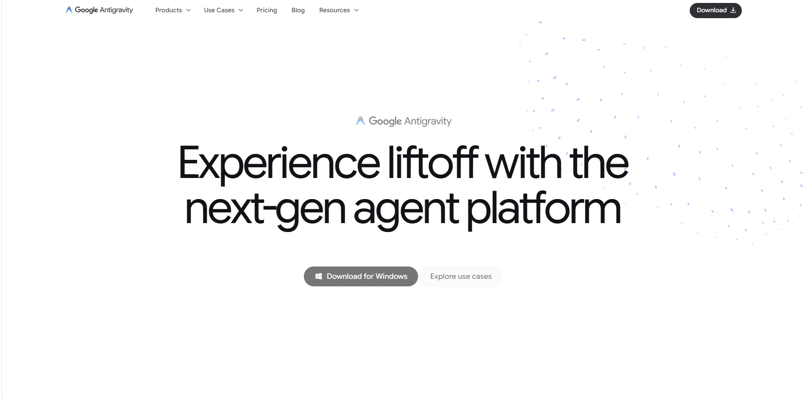
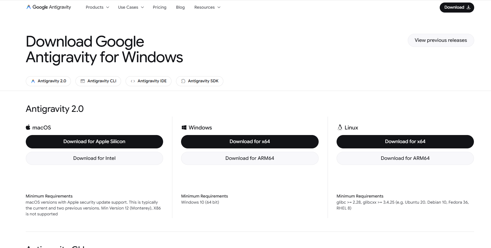
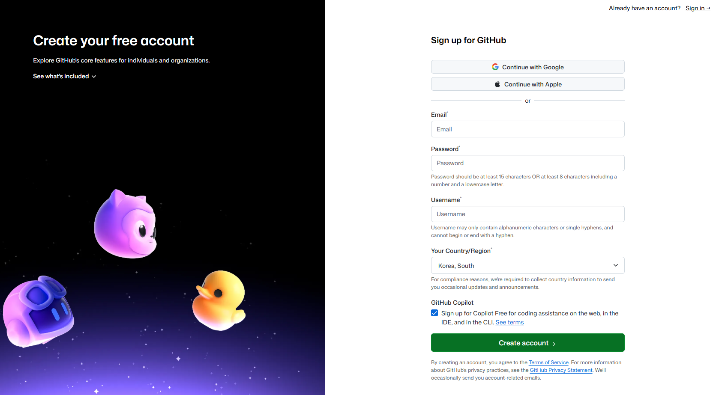
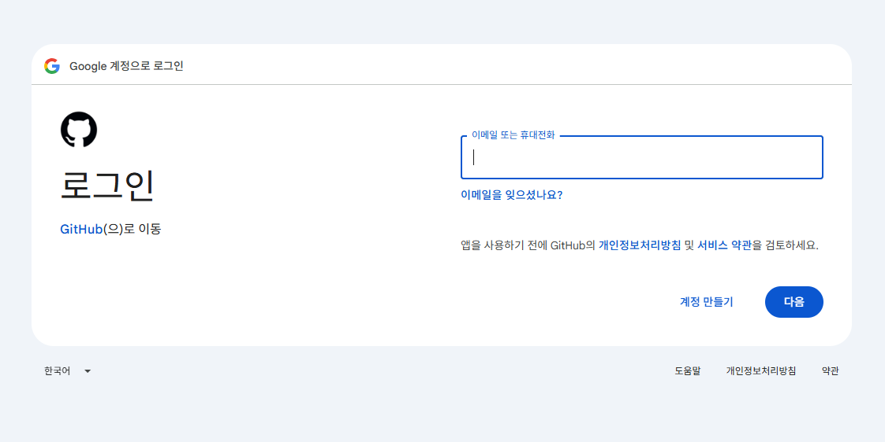
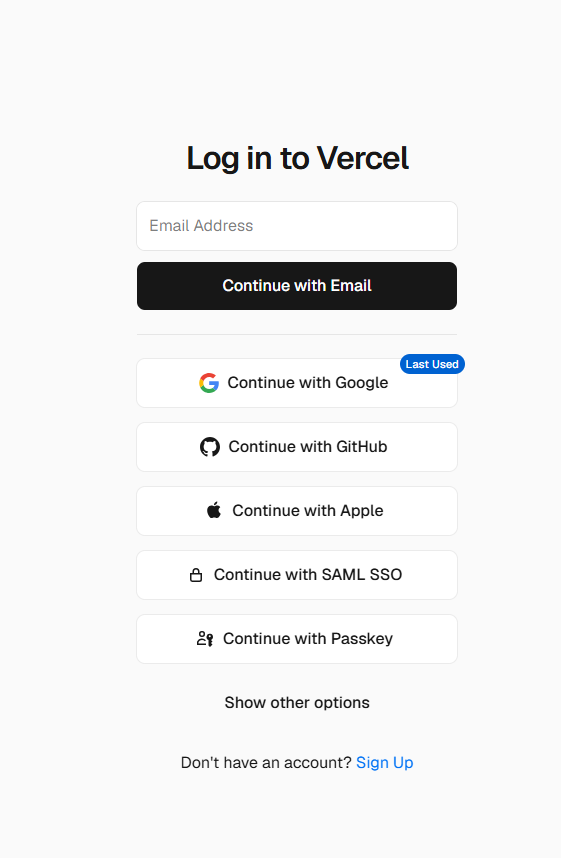
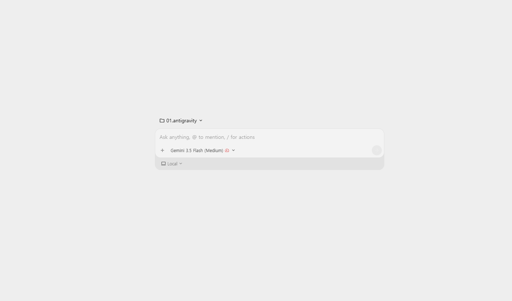
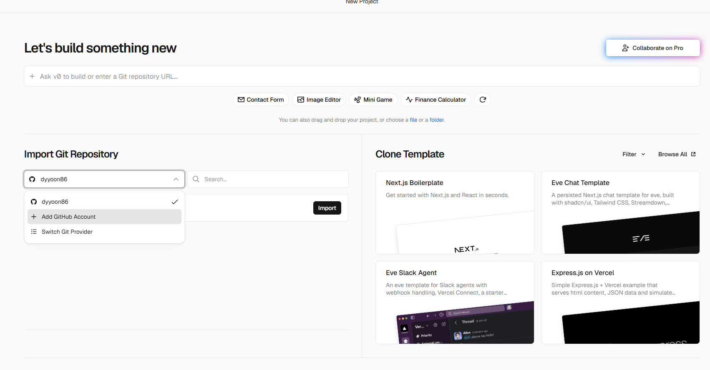
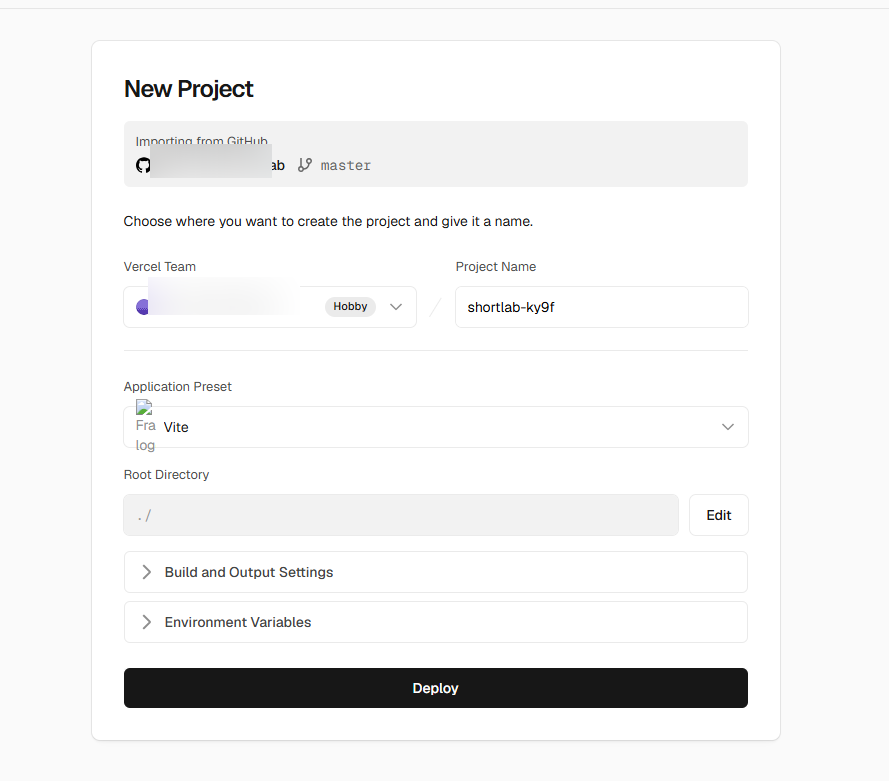

말로 부탁해서 웹사이트 만들기
가입부터 인터넷에 띄우기까지
AI에게 채팅으로 부탁하면 웹사이트를 대신 만들어 줍니다. 그 결과물을 진짜 인터넷 주소로 띄워서 전 세계 누구나 볼 수 있게 하는 것까지 — 이 책 하나만 따라 하면 됩니다. 돈은 한 푼도 안 듭니다.
이 책을 다 읽으면 생기는 것
코딩 지식 0에서 시작해서, 내가 만든 웹사이트의 진짜 인터넷 주소 하나
여러분은 지금부터 세 가지 무료 도구만 가지고 웹사이트를 만들어서 인터넷에 띄웁니다. 코드를 직접 한 줄도 쓰지 않습니다. 대신 AI에게 우리말로 "이런 거 만들어줘"라고 부탁하면 됩니다.
다 따라 하고 나면 https://내사이트.vercel.app 같은 진짜 주소가 하나 생깁니다. 그 주소를 카톡으로 보내면, 친구가 자기 폰에서 여러분이 만든 사이트를 바로 열어볼 수 있어요.
미리 준비할 것 (딱 3개)
- 컴퓨터 (윈도우/맥 상관없음)
- 구글 계정 (지메일 쓰시면 이미 있는 거예요)
- 30분 정도의 시간과 커피 한 잔
이 책에 나오는 영어 이름들(안티그래비티, 깃허브, 버셀)은 그냥 회사 이름 / 서비스 이름일 뿐입니다. 뜻을 몰라도 됩니다. "카카오톡", "배달의민족" 같은 이름이라고 생각하세요. 각 도구가 무슨 일을 해주는지만 알면 충분합니다.
세 도구가 각각 하는 일
식당 차리는 걸로 비유하면 딱 이해돼요
우리가 쓸 세 도구는 역할이 딱 나뉘어 있어요. 식당 차린다고 생각하면 쉽습니다. 이 그림만 머릿속에 있으면 나머지는 다 쉬워요.
"요리하기 → 창고에 넣기 → 가게 열기"가 각각 다른 일이라 그래요. 그리고 이렇게 나눠 두면 가게를 한 번 열어두고 나서는, 메뉴를 바꿔 창고에 넣기만 하면 손님상에 자동으로 새 메뉴가 나갑니다. (이 마법은 7장에서 다룹니다.)
🪄 안티그래비티 가입하기
말로 부탁하면 프로그램을 만들어 주는 AI 프로그램
안티그래비티(Antigravity)는 구글에서 만든, 컴퓨터에 설치해서 쓰는 프로그램이에요. 채팅창에 원하는 걸 적으면 AI가 알아서 웹사이트를 만들어 줍니다.

images/01-antigravity-download.png
images/02-antigravity-login.png- 웹브라우저(크롬 등)를 열고 주소창에
antigravity.google을 칩니다. - "Download"(다운로드) 버튼을 눌러서 내 컴퓨터에 맞는 걸 받습니다. (윈도우면 윈도우용, 맥이면 맥용을 자동으로 안내해 줘요.)
- 받은 파일을 두 번 눌러서 설치합니다. "다음 → 다음 → 설치" 식으로 진행하면 돼요.
- 설치가 끝나고 프로그램을 처음 켜면 로그인 화면이 나옵니다. "구글 계정으로 로그인"을 눌러서 평소 쓰는 지메일 계정으로 들어갑니다.
- 로그인되면 채팅창이 있는 작업 화면이 나옵니다. 여기까지가 가입 끝!
네. 무료로 쓸 수 있는 사용량이 넉넉하게 주어집니다. 오늘 실습 정도는 무료 범위 안에서 충분히 됩니다. 카드 등록 같은 것도 필요 없어요.
안티그래비티가 컴퓨터에 설치됐고, 구글 계정으로 로그인해서 채팅창이 보이면 성공입니다.
📦 깃허브 가입하기
내가 만든 파일을 보관하는 무료 인터넷 창고
깃허브(GitHub)는 만든 결과물을 올려두는 창고예요. 나중에 버셀이 이 창고를 들여다보고 사이트를 띄워줍니다. 그래서 깃허브 계정이 꼭 필요해요.

images/03-github-signup.png
images/04-github-signup-form.png- 브라우저 주소창에
github.com을 칩니다. - 오른쪽 위 "Sign up"(회원가입) 버튼을 누릅니다.
- 이메일을 입력합니다. (평소 쓰는 지메일 그대로 써도 돼요.)
- 비밀번호를 만들고, 사용자 이름(username)을 정합니다. 이 이름은 나중에 인터넷 주소에 들어가니 영어로 짧고 깔끔하게 정하세요. (예:
my-lab) - "사람 맞나요?" 확인 퍼즐을 풀고, 입력한 이메일로 온 인증 코드를 받아서 넣습니다.
- 무료 요금제(Free)를 선택하면 가입 끝!
깃허브 사용자 이름과 비밀번호는 다음 단계(버셀 로그인)에서도 쓰이고, AI가 창고에 저장할 때도 필요할 수 있어요. 지금 어디에 적어두세요.
깃허브에 로그인해서 내 프로필 화면(초록색 잔디밭 같은 화면)이 보이면 성공입니다.
🚀 버셀 가입하기
창고에 있는 걸 진짜 인터넷 주소로 띄워주는 곳
버셀(Vercel)은 깃허브 창고를 연결해두면, 그 안의 내용을 자동으로 인터넷에 띄워주는 서비스예요. 깃허브 계정으로 바로 로그인하는 게 제일 편합니다. (그래야 다음에 창고 연결이 매끄러워요.)

images/05-vercel-signup.png- 브라우저 주소창에
vercel.com을 칩니다. - "Sign Up"(회원가입)을 누릅니다.
- 가입 방법 중 "Continue with GitHub"(깃허브로 계속하기)를 고릅니다. — 방금 만든 깃허브 계정을 그대로 쓰는 거예요.
- 깃허브 로그인 화면이 뜨면 로그인하고, "Authorize Vercel"(버셀에게 권한 허용) 버튼을 눌러줍니다. 이건 "버셀아, 내 깃허브 창고 봐도 돼"라고 허락하는 거예요.
- 본인 용도를 물어보면 "Hobby"(개인용, 무료)를 선택하고, 이름 정도만 적으면 가입 끝!
개인이 취미로 쓰는 Hobby 요금제는 무료입니다. 우리가 만들 사이트 규모는 무료 범위로 충분해요. 카드 등록 필요 없습니다.
안티그래비티 · 깃허브 · 버셀 — 세 계정이 다 준비됐습니다. 이제 진짜로 만드는 단계로 갑니다.
✍️ 안티그래비티에 넣을 프롬프트 작성하기
"프롬프트" = AI에게 부탁하는 글. 이게 이 책의 핵심입니다.
이제 안티그래비티 채팅창에 무엇을 만들고 싶은지를 글로 적습니다. 이 부탁하는 글을 프롬프트(prompt)라고 불러요. 어려운 단어를 쓸 필요가 전혀 없어요. 눈에 보이듯이 구체적으로 설명하는 게 전부입니다.

images/06-antigravity-chat.png좋은 프롬프트의 3가지 원칙
- 무엇을 만들지 한 줄로 먼저 — "쇼츠 만드는 걸 도와주는 웹사이트를 만들어줘"
- 화면이 어떻게 생겼으면 하는지 — 색깔, 배치, 버튼 등 눈에 보이는 걸 설명
- 어떤 기능이 있어야 하는지 — 버튼을 누르면 무슨 일이 일어나는지
처음부터 완벽할 필요 없어요. 일단 대충 부탁해서 만들어진 걸 보고, "여기 색깔 바꿔줘", "글씨 더 크게 해줘" 처럼 대화하듯 계속 고쳐나가면 됩니다. AI랑 카톡한다고 생각하세요.
바로 복사해서 쓰는 예시 프롬프트
아래 글을 그대로 안티그래비티 채팅창에 붙여넣어도 됩니다. (원하는 내용으로 바꿔도 좋아요.)
쇼츠(짧은 영상) 만드는 걸 도와주는 웹사이트를 만들어줘. [전체 분위기] - 어두운 남색 배경에, 은은하게 빛나는 느낌의 세련된 디자인으로. - 글자는 깔끔한 한글 폰트로. [첫 화면(홈)] - 가운데에 큰 제목 "쇼츠를 만드는 모든 도구". - 그 아래에 카드 3개를 나란히. 각 카드는 기능 하나씩: 1) "AI 성우" — 글자를 넣으면 사람 목소리로 읽어주는 기능 2) "자막 추출" — 영상을 올리면 한글 자막을 만들어주는 기능 3) "무음 제거" — 영상에서 조용한 부분을 잘라주는 기능 - 카드를 누르면 각각 그 기능 페이지로 넘어가게 해줘. [기술 조건] - Vite + React로 만들어줘. - 나중에 깃허브에 올리고 Vercel에 배포할 거야. 일단 이렇게 첫 화면부터 만들어줘. 만들고 나면 어떻게 보이는지 보여줘.
- 위 프롬프트를 안티그래비티 채팅창에 붙여넣고 보내기(엔터)를 누릅니다.
- AI가 파일을 만들기 시작합니다. 중간에 "이렇게 해도 될까요?" 하고 물어보면 "응, 그렇게 해줘"라고 답하면 됩니다.
- 다 만들어지면 미리보기 화면으로 결과를 보여줘요. 마음에 안 드는 부분은 이어서 "제목을 더 크게 해줘" 처럼 계속 부탁합니다.
지금 만들어진 화면은 내 컴퓨터 안에서만 보입니다. 식당으로 치면 주방에서 저 혼자 맛보는 오픈 전 상태예요. 손님은 아직 못 봐요. 손님한테 내놓으려면 다음 두 단계(창고에 저장 → 가게 열기)가 필요합니다.
📤 깃허브에 올리기 (push)
"push(푸시)" = 내 파일을 인터넷 창고로 밀어 올리는 것
만든 결과물을 깃허브 창고에 올리는 걸 푸시(push)라고 해요. "내 파일을 창고로 밀어 넣는다"는 뜻이에요. 제일 쉬운 방법은, 이것도 안티그래비티한테 시키는 것입니다.
먼저 한 번 — 안티그래비티를 깃허브에 연결(로그인)
push를 하려면 안티그래비티가 "내 깃허브에 올려도 된다"는 허락(로그인)을 딱 한 번 받아야 해요. 보통 아래 셋 중 하나로 뜨는데, 대부분 ①로 끝나고 키(토큰)를 손으로 만들 필요는 없어요.
- 브라우저 로그인 (제일 흔함) — 화면에 깃허브 로그인 창이 뜨면 로그인하고 "Authorize / 허용"을 누르면 끝. 키 안 만들어도 됩니다.
- 안 뜨면 — 안티그래비티한테 "gh로 깃허브 로그인해줘"라고 부탁하면 브라우저 로그인으로 안내해 줘요.
- 그래도 안 되면 (토큰=키 방식) — 깃허브에서 개인 토큰을 발급해 붙여넣습니다. 아래 링크에서 Generate new token → 권한은
repo체크 → 만들어진 토큰을 복사해서 안티그래비티(또는 입력창)에 붙여넣기.

images/09-github-auth.png3번 방식으로 만든 토큰은 비밀번호와 같아요. 남한테 보여주거나 코드·캡처·영상에 노출되지 않게 조심하세요. 한 번 로그인해두면 다음부터는 안 물어봅니다.
방법 A — 안티그래비티한테 시키기 (추천, 제일 쉬움)
채팅창에 이렇게 부탁하세요:
지금까지 만든 걸 깃허브에 올려줘. - 새 저장소(창고) 이름은 "shorts-lab" 으로 만들어줘. - 공개(public)로 해줘. - node_modules 폴더는 올리지 말고(.gitignore 처리), 나머지를 커밋해서 push 해줘.
- AI가 진행하다가 깃허브 로그인/권한을 물어보면, 화면 안내대로 깃허브 계정으로 허용해 줍니다.
- 다 되면 "올리기 완료" 같은 메시지와 함께 창고 주소를 알려줍니다.
- 브라우저에서
github.com→ 내 프로필 → Repositories에shorts-lab창고가 생겼는지, 파일이 들어와 있는지 확인합니다.
AI가 자동으로 못 하는 경우엔 이렇게 하세요.
① 깃허브 접속 → 오른쪽 위 ＋ → New repository
② 이름 shorts-lab, Public 선택 → Create repository
③ 그다음 화면에 나오는 명령어들을 안티그래비티한테 "이 명령어들 실행해서 push 해줘"라고 그대로 전달하면 됩니다.
깃허브 shorts-lab 창고 안에 파일들(예: index.html, package.json, src 폴더 등)이 보이면 성공입니다.
node_modules는 용량이 엄청 크고, 버셀이 알아서 다시 만들어 줍니다. 그래서 .gitignore라는 목록에 넣어 창고에서 제외하는 거예요. 위 프롬프트에 이미 포함돼 있으니 그대로 부탁하면 됩니다.
🌐 버셀에 연동해서 인터넷에 띄우기
이 단계는 사람이 직접 버튼을 눌러야 해요 (AI 대행 X)
드디어 마지막! 버셀에서 깃허브 창고를 연결하면, 버셀이 그 안의 내용을 진짜 인터넷 주소로 띄워줍니다. 이 단계는 로그인이 필요해서 여러분이 직접 진행합니다. 어렵지 않아요.

images/07-vercel-import.png
images/08-vercel-deploy.png- 버셀에 로그인한 상태로
vercel.com/new에 접속합니다. (또는 첫 화면의 "Add New… → Project") - 내 깃허브 창고 목록이 보입니다.
shorts-lab옆의 "Import"(가져오기) 버튼을 누릅니다.창고 목록에 안 보이나요?"Adjust GitHub App Permissions" 또는 "Configure GitHub"를 눌러서 버셀이 이 창고를 볼 수 있게 허용해 주세요. 그러면 목록에 나타납니다.
- 빌드 설정 화면이 나옵니다. 대부분 자동으로 맞춰져 있어요. 아래만 확인하세요:
- Framework Preset(프레임워크): Vite — 보통 자동 인식됩니다
- Build Command(빌드 명령):
npm run build - Output Directory(출력 폴더):
dist
- 큰 "Deploy"(배포) 버튼을 누릅니다.
- 1~3분 정도 기다립니다. 화면에 로그가 쭉 지나가는데, 이건 가게가 재료로 요리를 완성하는 중(빌드)이에요. 곧 축하 폭죽(🎉)과 함께 완료됩니다.
- "Visit"(방문) 또는 미리보기 화면에 나온 주소(예: shorts-lab.vercel.app)를 누르면 — 내가 만든 사이트가 진짜 인터넷에 떴습니다! 🎊
이제 그 주소를 카톡으로 아무에게나 보내보세요. 친구가 자기 폰에서 여러분이 만든 사이트를 열어볼 수 있습니다. 여러분은 방금 코드 한 줄 안 쓰고 웹사이트를 세상에 공개했어요.
당황하지 마세요. 로그에 나온 빨간 글씨(에러 메시지)를 복사해서 안티그래비티 채팅창에 붙여넣고 "버셀 배포에서 이 에러가 났어. 고쳐줘"라고 부탁하세요. 고친 뒤 다시 push하면(5장) 버셀이 자동으로 다시 배포합니다. 자세한 건 아래 FAQ를 참고하세요.
🔁 앞으로 고칠 땐 이렇게 (자동 재배포의 마법)
한 번 연결해 두면, 이제부터가 진짜 편해요
여기까지 왔으면 제일 좋은 소식이 남았어요. 한 번 버셀에 연결해 두면, 앞으로는 버셀을 다시 건드릴 필요가 전혀 없습니다.
이제부터 사이트를 고치고 싶으면 순서가 딱 두 개예요:
- 안티그래비티한테 "이런 기능 추가해줘 / 여기 이렇게 바꿔줘"라고 부탁해서 고칩니다.
- 안티그래비티한테 "방금 바꾼 거 깃허브에 push 해줘"라고 합니다.
그러면 버셀이 창고에 새 레시피·재료가 들어온 걸 알아서 보고, 가게가 알아서 다시 요리를 해서(빌드), 완성된 새 메뉴로 손님상까지 자동으로 바꿔줍니다. 여러분이 버셀에서 아무것도 안 눌러도 돼요.
이제 여러분의 사이트는 "살아있는" 가게예요. 메뉴(기능)를 하나씩 늘릴 때마다 창고에 넣기(push)만 하면 손님상에 자동으로 올라갑니다. 처음 세팅이 조금 번거로웠던 건, 바로 이 자동화를 위해서였어요.
🆘 막히면 여기 — 자주 나오는 질문
대부분의 문제는 "에러 메시지 복사 → AI한테 붙여넣기"로 풀려요
진짜 돈이 하나도 안 드나요?
네. 세 도구 모두 무료 사용 범위(안티그래비티 무료 할당량, 깃허브 Free, 버셀 Hobby)가 있고, 개인이 만드는 사이트 하나 정도는 이 무료 범위로 충분합니다. 카드 등록도 필요 없어요. 단, 방문자가 아주 많아지거나 상업적으로 크게 쓰면 유료 전환이 필요할 수 있습니다.
깃허브 창고 목록이 버셀에 안 보여요.
버셀의 프로젝트 가져오기 화면에서 "Adjust GitHub App Permissions"(또는 "Configure GitHub")를 눌러, 버셀이 해당 창고를 볼 수 있도록 권한을 열어주세요. 특정 저장소만 허용하거나 전체 허용을 고를 수 있습니다.
버셀 배포가 실패(빨간색)했어요.
가장 흔한 원인은 빌드 과정의 에러예요. 버셀 배포 로그에서 빨간 글씨 부분을 통째로 복사해서 안티그래비티에 "버셀에서 이 에러로 배포가 실패했어. 원인 찾아서 고쳐줘"라고 붙여넣으세요. 고친 다음 다시 push하면 버셀이 자동으로 재배포합니다.
"빌드 설정"에서 뭘 넣어야 할지 모르겠어요.
Vite 프로젝트 기준으로 Build Command는 npm run build, Output Directory는 dist 입니다. 대부분 버셀이 자동으로 이 값을 채워주니, 비어 있을 때만 직접 넣으면 됩니다.
push할 때 브랜치가 master인지 main인지 헷갈려요.
둘 중 뭐든 상관없어요. 버셀은 창고의 기본 브랜치에 올라온 내용을 자동으로 배포합니다. 안티그래비티한테 맡기면 알아서 처리해 주니, 이름은 신경 쓰지 않아도 됩니다.
안티그래비티가 자꾸 되묻기만 하고 진행을 안 해요.
프롬프트 맨 끝에 "애매하면 네가 알아서 합리적으로 정하고, 다시 묻지 말고 끝까지 진행해줘"라고 한 줄 붙여보세요. 그래도 물어보면 "응, 그렇게 해줘"라고 짧게 답해서 계속 진행시키면 됩니다.
주소를 나만의 도메인(예: mysite.com)으로 바꾸고 싶어요.
버셀 프로젝트 → Settings → Domains에서 직접 산 도메인을 연결할 수 있습니다. 도메인 구입은 별도(유료)지만, 기본으로 주는 *.vercel.app 주소만으로도 사이트는 완전히 정상 작동합니다.